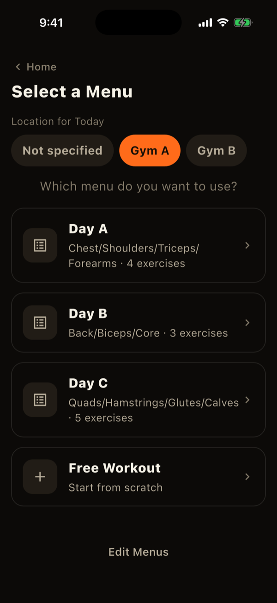
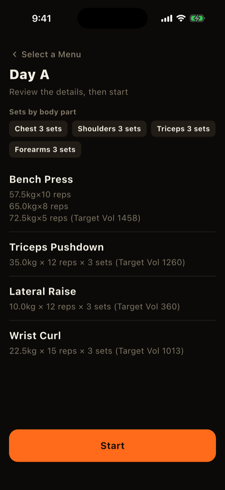
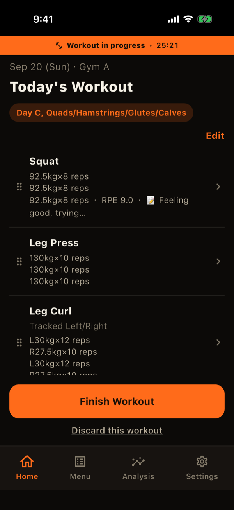
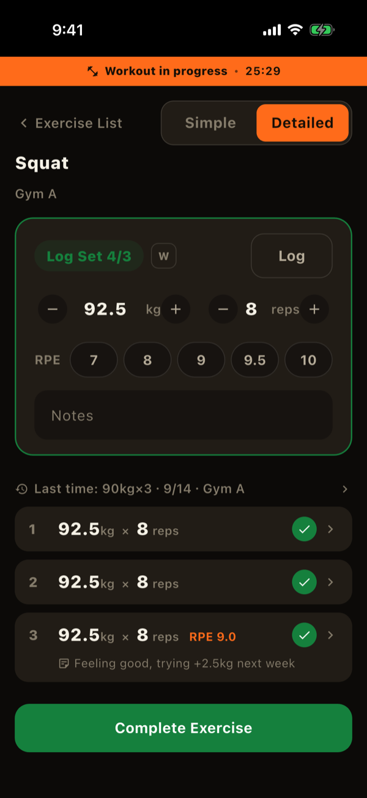
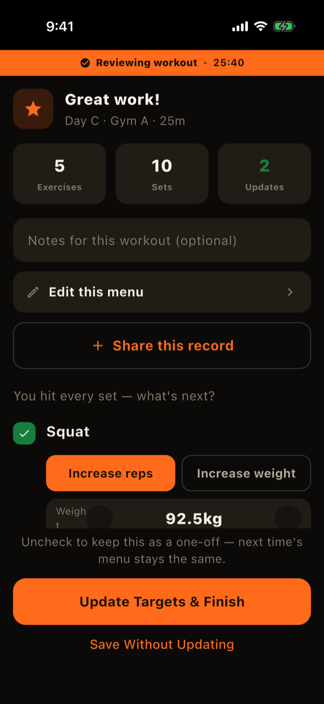

In LiFTY, one workout from start to finish is called a "session." This page walks through starting a session, logging sets, and finishing.
1. Start a workout
Tap "+ Start Workout" on the Home screen. If you train more than once a day, sessions are recorded separately as "1st," "2nd," and so on.
- Choose today's location: pick home, Gym A, and so on. This becomes the default for the whole session.
- Choose a menu: pick one of your saved menus (Day A, Day B, ...) or "Free workout." Menus whose exercises are not used at the location you chose are not shown.
- Review and start: after choosing a menu you see its exercises and targets. The timer starts when you tap "Start."
"Free workout" lets you pick exercises on the spot without a menu. When you finish, you can save what you did as a new menu.


2. Log sets for each exercise
During a workout, the screen lists the exercises to do. Tap an exercise to open its set-logging screen.
- Enter weight and reps, then tap "Log": the fields are pre-filled with the menu's target. Save as is, or adjust first. A compact number pad appears at the bottom of the screen.
- Tap a target row to log it instantly: unlogged sets are listed with their targets. Tapping the top row logs that set exactly as targeted.
- Extra sets are fine: use "+ Add set" to log more than the target.
- Edit or delete: tap a logged set to change its weight or reps, or to delete it.
Exercises tracked left and right separately
If "Track left and right separately" is on for an exercise, the input card shows a left/right switch so you can log each side. Target sets are counted per side, and the exercise counts as done only when both sides reach the target.
RPE, notes, and warm-up sets
- RPE: record how hard a set felt on a 7-10 scale (detail mode).
- Notes: leave a free-text note on any set.
- Warm-up: sets marked with the "W" button are treated as warm-ups. They are excluded from goal-achievement checks, automatic target suggestions, and set counts.
When you reach the target number of sets, the input card turns green and "Complete Exercise" at the bottom becomes the primary button.


3. Finish the workout
After logging every exercise, tap "Finish Workout." The button turns green when every exercise has met its target.
The completion screen that follows offers a few things:
- A note for the whole session: optional.
- Automatic target suggestions: if you hit your target on every set of an exercise, LiFTY suggests raising it, either "more reps" or "more weight." You can turn these suggestions off in Settings.
- Save as a menu (free workouts only): turn what you did into a new menu.
Tap "Save workout" to complete the session. When suggestions are shown, choose "Update Targets & Finish" or "Save Without Updating."

Stopping early or taking a rest day
- Discard a session: use "Discard this workout" below the in-progress screen.
- Declare a rest day: tap "Rest today" on Home to record a deliberate rest day. It appears in a separate color on the record calendar.
Adding a workout for a past day
If you forgot to log a day, you can add it later. On the Home streak card (the horizontal row of dates), pick the day, then tap "+ Add a workout for this day" at the bottom. Choosing a location and menu works the same as for today.
LiFTY is a workout log you can start using right away, with no account required.
Download on the App Store